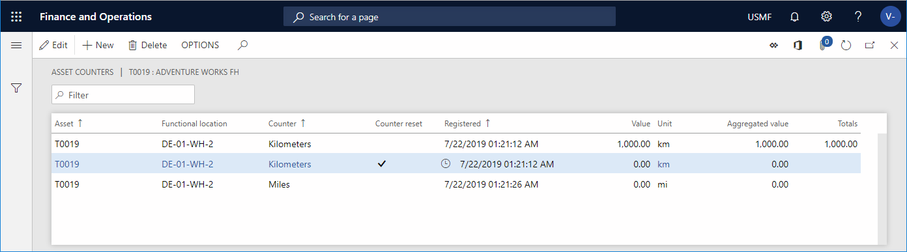

Die manuelle Aktualisierung von Anlagenzählern
Important
Dynamics 365 for Finance and Operations hat sich zu speziell entwickelten Anwendungen entwickelt, mit denen Sie bestimmte Geschäftsfunktionen verwalten können. Weitere Informationen zu diesen Änderungen finden Sie im Dynamics 365-Lizenzierungshandbuch.
Zähler werden verwendet, um Erfassungen für eine Anlage zu erstellen, z. B. Erfassungen zur Anzahl der Stunden, die die Anlage in Betrieb war, oder zur Menge, die produziert wurde.
Der Zählertyp, der für einen Zähler aktiviert wird, kann festgelegt werden, um Zählerwerte zu vererben. Das bedeutet, die Option Anlagenzählerwerte vererben ist auf Ja gesetzt auf dem Inforegister Allgemein der Seite Zähler (Anlangenverwaltung > Einstellungen > Anlagentypen > Zähler). In diesem Fall, wenn Sie eine neue Zählerposition dieses Typs erstellen, wird jede untergeordnete Anlage, die den gleichen Zählertyp verwendet, automatisch aktualisiert.
Auf der Seite Alle Anlagen erstellen Sie Stunden- oder Mengenzählerregistrierungen für eine Anlage, basierend auf Ihren Messwerten für die Anlage.
Wählen Sie Anlagenverwaltung > Allgemeines > Anlagen > Alle Anlagen.
Wählen Sie die Anlage aus und dann im Aktivitätsbereich auf der Registerkarte Anlage in der Gruppe Vorbeugend die Option Zähler. Auf der Seite Anlagenzähler sehen Sie eine Liste aller früheren Zählerregistrierungen für die ausgewählte Anlage.
Wählen Sie Neu aus, um eine Registrierung zu erstellen. Die Anlagen-ID wird automatisch in das Feld Anlage eingetragen.
Wählen Sie im Feld Zähler den entsprechenden Zähler aus. Es sind nur Zähler zur Auswahl verfügbar, die sich auf die auf der Anlage ausgewählte Anlagenart beziehen. Die zugehörige Einheit wird automatisch in das Feld Einheit eingegeben.
Im Feld Erfasst wählen Sie das Datum und die Uhrzeit für die Zählererfassung aus.
Geben Sie im Feld Wert die Zahl seit der letzten Zählererfassung ein. Sie können stattdessen im Feld Aggregierter Wert die gesamte Zählerzahl eingeben.
Beachten Sie die folgenden Punkte:
Wenn Sie einen neuen Zähler physisch auf einer Anlage installieren, müssen Sie die Änderung auf der Anlage auf der Seite Anlagenzähler registrieren. Danach müssen Sie zwei Erfassungspositionen erstellen, die identische Zeitstempel haben. Die erste Position muss für den Zähler sein, den Sie ersetzen. Auf der Position, die dem neuen Zähler zugeordnet ist, aktivieren Sie das Kontrollkästchen Zähler zurücksetzen. Im Feld Summen ist die Gesamtzahl die Summe der Zählersummen aller registrierten Werte auf diesem Zählertyp.
Wenn das Kontrollkästchen Zähler zurücksetzen bei einer Anlage mit einem Wartungsplan mit Intervalltyp „Einmal von...“ oder „Einmal erreicht...“ aktiviert ist, ist der Zähler auf der neuen Zählerposition weiterhin aktiv, da Sie eine separate Zählerposition erstellen und mit einem neuen Zähler neu beginnen.
In der folgenden Abbildung wird ein Beispiel der Seite Anlagenzähler angezeigt.

Auf der Seite Anlagenzähler (Anlagenverwaltung > Abfragen > Anlagen > Anlagenzähler) können Sie Zählererfassungen für mehrere Anlagen gleichzeitig nach Bedarf vornehmen.
Note
Sie können einen Bereich einrichten, um Abweichungen in den manuellen Zählererfassungen zu definieren. Sie können auch die Art der Meldung angeben, die angezeigt wird, wenn Erfassungen außerhalb des definierten Bereich sind. Weitere Informationen zum Einrichten von Zählern finden Sie unter Zähler.